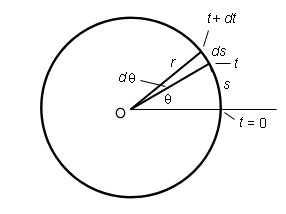
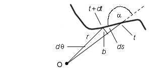

Angular speed and speed. The angular speed of an object is the magnitude of the object's angular velocity. It too is denoted by w. It can be related to the object's speed as follows. Let's look at the case of circular motion first.
Angular velocity can be defined not only for straight-line motion, as in Figure 1 on Page 1, but for arbitrary curvilinear motion. In fact, the most frequent application of the concept of angular velocity is in circular motion.
The following Figure 2 illustrates the quantities involved in the definitions of the angular speed w and the speed v of a particle moving in a circle.

Figure 2
The particle itself is not shown in Figure 2, but the instants of time are indicated when the particle is at different points on the circle: time t = 0, time t, and time t + dt. In the time interval from t = 0 to t, the particle travels a distance s and its angular coordinate increases from q = 0 to q. During the subsequent very small time interval dt, the particle travels an additional distance ds and changes its angle by dq.
From the definition of the radian measure of angles (go either to "Angle" under Related Items or to Kinematics/Angle/Get Informtion), it follows that
s = r q
 (1)
(1)
ds = r dq
 (2)
(2)
Dividing both sides of Equation (2) by the time dt elapsed while the particle is moving through the angle dq and moving the distance ds gives
ds / dt = r dq / dt  (3)
(3)
v = r w
.  (4)
(4)
Comment 1. Mathematically, in order to get Equation (4), one must take the limits of the ratios in Equation (3), such that both the numerators and denominators go to zero. In standard calculus notation, these limits are denoted ds / dt and dq / dt. In our derivation, we have let this notation do double duty and denote both ratios of very small quantities and the limits of these ratios.
Comment 2. Compare Equations (1) and (4). Both of them relate angular quantities to quantities measured along the circumference of the circle. In both cases the angular quantity, angle or angular speed, is multiplied by the radius r to give the quantity along the circumference, distance or speed, respectively.
Equations (1) and (4) are used frequently. You need to remember the factor of r. It is easy to know, on dimensional grounds, that this factor must be on the side of the angular quantities.
Question. Suppose a paricle is moving along some arbitrary trajectory, as in Figure 3 below. How are the particle's speed and angular speed related then?

Figure 3
Again, the diagram in Figure 3 does not show the particle, but indicates the locations of the particle on the trajectory at times t and t + dt. The particle is moving from right to left, generally speaking.
Angle a is the angle between the particle's position and velocity vectors at time t. (The position vector goes from point O to the particle, the velocity vector points along the trajectory.)
The small arc of length b which can be treated like a straight line in the limit of vanishing dq is related to q and ds by
b = r dq = ds sin a .  (5)
(5)
Dividing both sides of the last equality by dt gives
r w = v sin a .  (6)
(6)
For a = 90o, this equation reduces to Equation (4).
One can use Equation (6) to measure the speed of the car shown in Figure 1 on Page 1 as follows. One could aim a telescope from point O to the car, measure the distance r from the telescope to the car, the angle a between the line of sight and the road, and the angular speed w of the telescope as it is keeping the car in view. Given these three values, the car's speed v can be calculated using Equation (6).